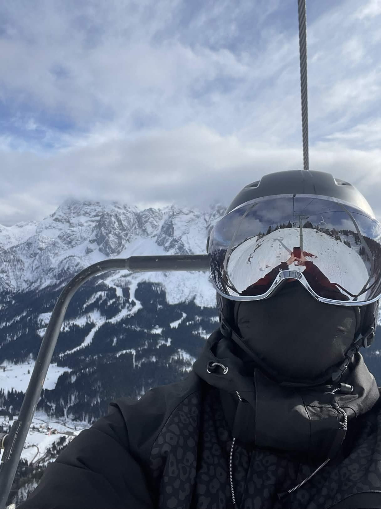

Security and relentless curiosity.

Welcome! This is my personal cybersecurity portfolio — a space where I document my journey through practical learning, security research, and hands-on technical projects.
You'll find real-world experiments, labs, and write-ups exploring offensive security concepts, all built around a genuine curiosity for how things work (and how they can be broken).
Alongside the cybersecurity side of things, I also have a passion for FPV — from building and tuning quads to pushing the limits of freestyle. Both worlds share the same spirit: tinkering, problem-solving, and always learning something new.
This portfolio is my way of sharing that journey — showcasing technical skills, practical experience, and the mindset that drives it all. Whether you're here for the security content, the FPV builds, or just to explore, welcome aboard!
bits, signals & propellers.